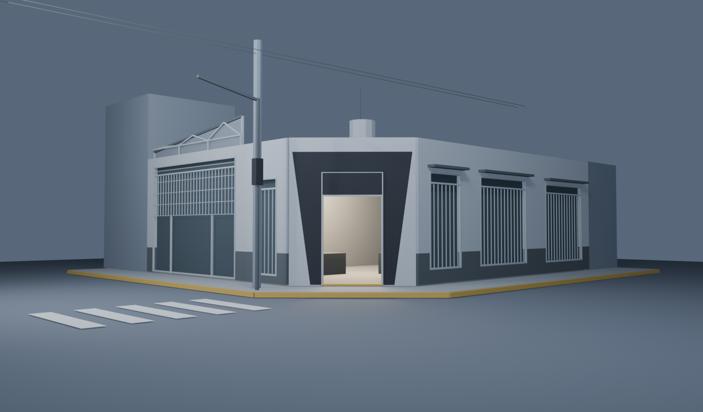
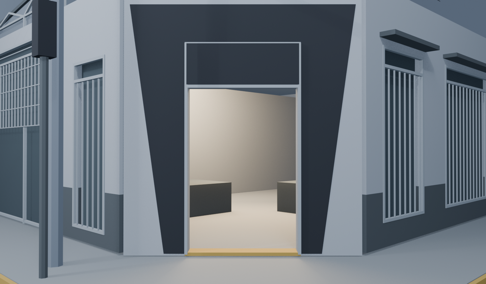
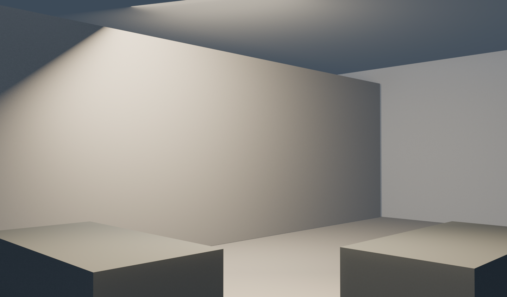
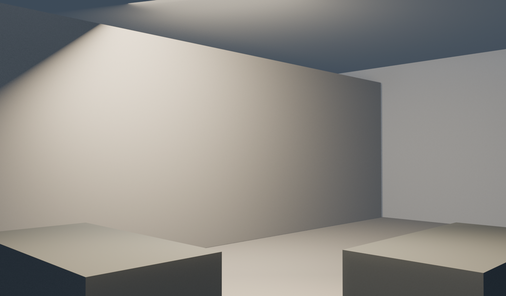
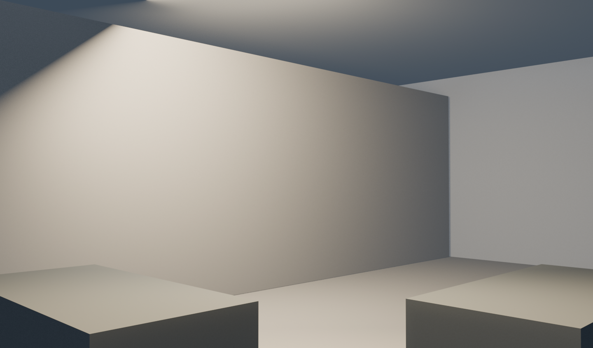
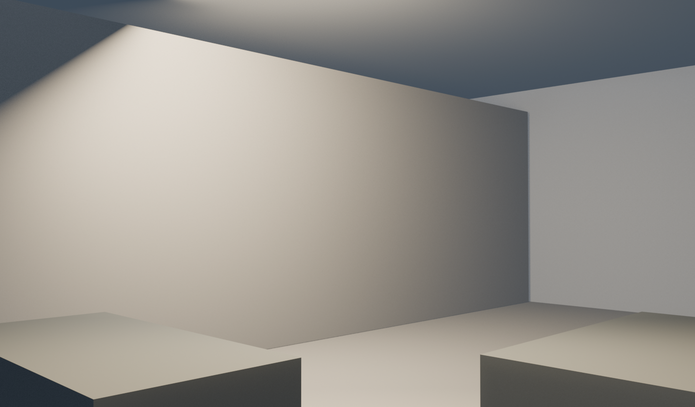

Prueba más reciente: ver el recorte que termina el 3D visible en el acceso. Esta página conserva la trayectoria completa para comparación.
Entrar, sin hacer esperar.
La cámara arranca en el encuadre A aprobado, avanza desde el primer instante y termina apenas 20 cm después del umbral. Esta prueba dura 4,75 segundos de movimiento.
Duración12 → 4,75 s
Ensayo de Blender, equivalente aproximado para scroll futuro
Profundidad final75 → 20 cm
El final queda apenas dentro del acceso
Encuadre inicialA · 34 mm
Misma posición y focal de la prueba aprobada
Ver el ritmo
Nueva prueba · 4,75 s
Aproximación inmediata, breve desaceleración y final a 20 cm del umbral.
Anterior · 12 s
Referencia de ritmo: misma cámara inicial, final a 75 cm.
Acceso libre provisional. La puerta no se abre en estos videos: se omite desde el inicio sólo para validar cámara y tiempo. El mecanismo real sigue pendiente; el interior conserva el volumen esquemático anterior.
Momentos de la nueva trayectoria
0 s2,4 s3,4 s4,33 s4,75 s

0 s · Exterior ALocal reconocible; el movimiento comienza inmediatamente.

2,42 s · AproximaciónCámara alineada con el acceso.

4,17 s · DesaceleraciónA unos 28 cm del plano de acceso.

4,33 s · Futuro punto de transiciónA unos 12 cm afuera; es sólo un marcador.

4,54 s · CruceUnos 5 cm dentro del acceso.

4,75 s · Final20 cm adentro. El detalle interior sigue provisional.
Archivo Blender v002Video nuevoDatos y límites de la prueba